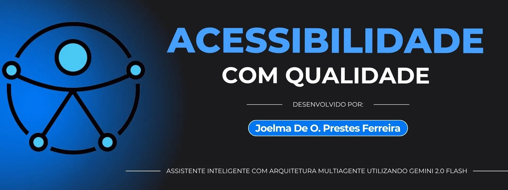

Principais Funcionalidades
- Respostas claras com exemplos práticos
- Validação técnica baseada em WCAG e ARIA
- Sugestões de testes com ferramentas (axe, NVDA)
- Recomendações de estudo e referências
- Não revisa código-fonte
Assistente inteligente com arquitetura multiagente para sanar dúvidas sobre acessibilidade digital.
Este projeto é um chatbot acessível e didático, voltado para profissionais, desenvolvedores e equipes de qualidade que desejam tirar dúvidas sobre acessibilidade digital. A solução utiliza a API Gemini da Google para gerar respostas completas, testáveis e com referências confiáveis, baseadas em WCAG e ARIA.